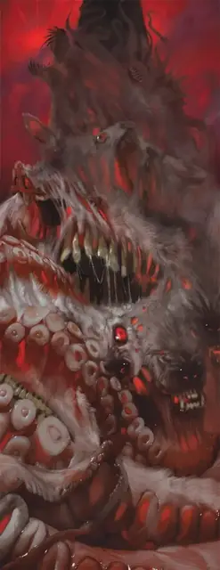

Старший эмиссар звёздных порождений
Greater Star Spawn Emissary
Огромная Аберрация, Хаотичная Злая

Класс Защиты 15 Инициатива +8 (18)
Хиты 304 (21к12 + 168)
Скорость 40 футов, Полёта 40 футов (парит)
| мод | спас | ||
|---|---|---|---|
| СИЛ | 24 | +7 | +7 |
| ЛОВ | 13 | +1 | +1 |
| ТЕЛ | 26 | +8 | +15 |
| мод | спас | ||
|---|---|---|---|
| ИНТ | 27 | +8 | +15 |
| МДР | 22 | +6 | +13 |
| ХАР | 25 | +7 | +14 |
Сопротивление урону Кислота, Некротический, Психический, Силовой
Иммунитеты Испуганный, Истощение, Очарованный
Чувства пассивное Восприятие 23, Истинное зрение 120 футов
Языки Все, Телепатия 120 фт.
Опасность 21 (33 000 опыта или 41 000 опыта в Логове; БВ +7)
Особенности
Восстановление аберрации. Спустя один день после уничтожения эмиссар возрождается с полными Хитами в пространстве Бормочущего ротовика, который был в пределах 300 футов от эмиссара в момент его смерти, а этот ротовик уничтожается.
Легендарное сопротивление (3/день, или 4/день в Логове). Если эмиссар проваливает спасбросок, он вместо этого может в нём преуспеть.
Действия
Мультиатака. Эмиссар совершает две атаки Хлещущей пастью или Загустевшим гноем. Он может заменить одну из этих атак использованием Неземной желчи.
Хлещущая пасть. Бросок рукопашной атаки: +14, досягаемость 15 фт. Попадание: 33 (4к12 + 7) Колющего урона плюс 18 (4к8) урона Кислотой.
Загустевший гной. Бросок дальнобойной атаки: +15, дистанция 120 фт. Попадание: 44 (8к8 + 8) урона Кислотой.
Неземная желчь (Перезарядка 5–6). Спасбросок Ловкости: Сл 23, все существа в 30-футовой Сфере с центром в точке, видимой эмиссаром в пределах 120 футов. Провал: 54 (12к8) урона Кислотой, и в незанятом пространстве в пределах 30 футов от цели появляется Бормочущий ротовик. Ротовик имеет то же значение Инициативы, что эмиссар, и ходит сразу после него. Все ротовики сражаются, пока не будут уничтожены. Успех: Только половина урона.
Легендарные действия
У этого существа есть 3 использования Легендарных действий (или 4 использования в его Логове); оно может немедленно после окончания хода другого существа потратить одно использование, чтобы совершить одно из следующих действий. Существо восполняет все потраченные использования в начале каждого своего хода.
Телепорт-плеть. Эмиссар телепортируется в видимое им незанятное пространство на расстояние вплоть до 30 футов и совершает одну атаку Хлещущей пастью.
Насильные мутации. Спасбросок Харизмы: Сл 23, вплоть до двух видимых эмиссаром существ в пределах 30 футов. Провал: Цель Парализована до конца своего следующего хода. Провал или успех: Эмиссар не может совершить это действие до начала своего следующего хода.
Бонус мастерства +7
Эмиссары звёздных порождений
Исполинские, меняющие облик пришельцы-колонизаторы
Эмиссары звёздных порождений — это пальцы чуждых миров, персты, что склоняют чашу весов реальности к ужасу. Предвещаемые зловещими небесными знамениями, эти алчные захватчики подготавливают миры для своих невообразимых владык. Прибегая к двум изменчивым обличьям, эмиссары подрывают само восприятие порядка, доверия и действительности в глобальных масштабах и готовят почву для истин, сокрушающих рассудок, и череды апокалипсисов.
Старшая форма эмиссара — гнусное разрушительное отродье. Это чудовищное скопище яростной плоти соткано из тел и голосов всех существ, чей облик эмиссар когда-либо перенимал. Лишь с уничтожением этой высшей формы эмиссар считается поверженным окончательно.
Логова эмиссаров звёздных порождений
Логова, где обитают эмиссары звёздных порождений, преобразуются в гротескные органические сооружения. Развалины сторожевой башни могут стать столпом пульсирующей плоти, а заброшенная шахта — лабиринтом липких жилистых кишок.
Местность, в которой находится логово эмиссара, изменяется из-за его присутствия, что создаёт следующие эффекты:
• Космическое преображение. Когда существо в логове перевоплощается, возвращаясь в истинную форму, все существа в пределах 10-футовой Эманации, исходящей от него, получают 10 (3к6) Силового урона.
• Кошмарная топография. Местность в логове обращается в глумливую насмешку над плотью: всюду проступают толстые вены, вываленные языки, пульсирующие отверстия и другие жуткие черты. Существа по выбору эмиссара в пределах 1 мили от логова совершают с Помехой спасброски на избежание и окончание состояния Испуганный.
Если эмиссар умирает или перемещает своё логово в другое место, все эти эффекты мгновенно исчезают.